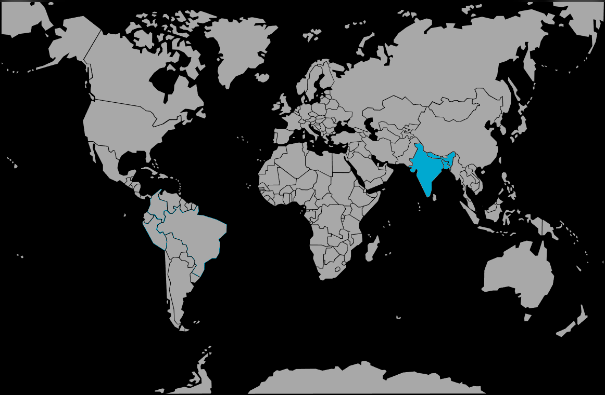

Systématique
- Ordre : Anabantiformes
- Famille : Osphronemidae
- Genre : Ctenops
- Espèce : Ctenops nobilis
Ctenops nobilis, parfois appelé gourami noble ou gourami fragile, est un anabantoïde asiatique discret, capable de respirer l’air grâce à son organe labyrinthe et vivant dans des eaux calmes, souvent ombragées.
Les adultes atteignent en général 8–10 cm, parfois un peu plus, avec un corps allongé, une coloration brunâtre à beige mouchetée et des reflets plus clairs qui s’intensifient lors des interactions sociales.
Ctenops nobilis est réputé très sensible au stress; les individus vivent naturellement en colonies structurées autour d’une hiérarchie, avec des rapports parfois vifs entre congénères.
En aquarium, il se montre timide mais territorial, peut devenir agressif envers d’autres espèces territoriales ou trop vives, et nécessite un environnement très calme avec de nombreuses cachettes pour réduire les tensions.
Mode : ovipare à incubation buccale; après la ponte et la fécondation, les œufs sont ramassés dans la bouche d’un des parents, généralement la femelle, où ils incubent plusieurs jours.
La reproduction en captivité reste délicate, l’espèce étant très sensible aux dérangements et aux maladies; l’isolement du couple, un bac très calme et une qualité d’eau irréprochable sont indispensables pour mener l’incubation à terme.
Dimorphisme sexuel : discret; les mâles sont souvent légèrement plus grands, plus élancés et un peu plus contrastés, avec des nageoires parfois plus effilées, tandis que les femelles paraissent plus robustes, surtout en période de reproduction.
Espérance de vie : en bonnes conditions, la longévité peut approcher 6 à 8 ans, mais elle est souvent réduite si l’acclimatation ou la qualité de l’eau sont insuffisantes.
L’espèce fréquente des fossés, mares, marécages et zones calmes de petits cours d’eau, aux eaux douces, acides et pauvres en minéraux, souvent chargées en tanins et en matière organique en décomposition.
Répartition
Origine naturelle :
- Nord‑est du sous‑continent indien : Inde (Assam, Bengale‑Occidental) et Bangladesh.
- Lacs, étangs, marécages, fossés et bras morts de rivières à courant faible ou quasi stagnant, riches en végétation aquatique et en débris végétaux.
Ces milieux sont souvent faiblement éclairés, avec une eau brunâtre à cause des tanins; un éclairage doux et une forte couverture végétale sont recommandés en aquarium.
Paramètres de maintenance
Température : 22 à 28 °C, en évitant les variations rapides.
pH : environ 5,5 à 7,0, avec une préférence pour une eau douce légèrement acide.
GH : 1 à 8 °dGH, eau douce à peu minéralisée.
Courant : très faible; privilégier une filtration douce et une large surface d’échange plutôt qu’un fort brassage.
Volume conseillé : au minimum 100 L pour un petit groupe, avec de nombreuses cachettes (plantes, racines, feuilles) afin de limiter les confrontations directes.
Régime alimentaire
Régime : carnivore à tendance insectivore; dans la nature, l’espèce consomme principalement de petites proies aquatiques, larves et invertébrés.
En aquarium, elle accepte les nourritures vivantes et congelées (petites larves, artémias, daphnies) ainsi que certains aliments secs de bonne qualité, à condition de varier les apports et de distribuer des rations modérées.
Une alimentation adaptée, associée à une eau propre et stable, est essentielle pour limiter les problèmes de santé fréquents chez ce gourami réputé fragile.